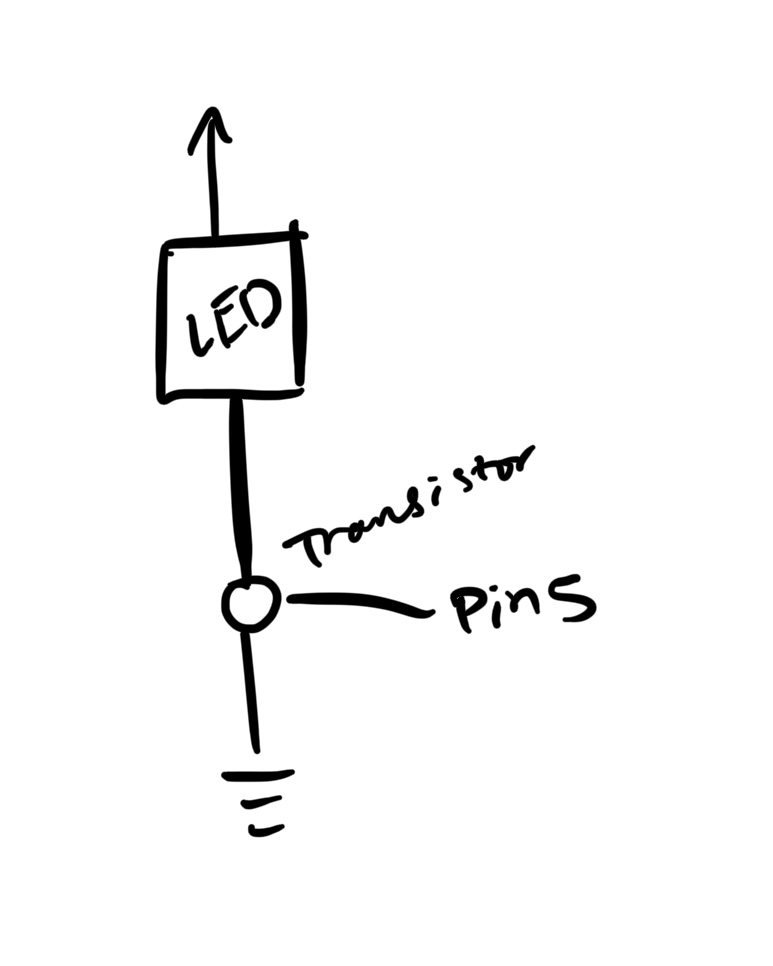

Final Project
Take a look at my final project! My project, IllumiFunction's concept is to curate a vibe for any party! The LED set up is responsive to the music you play, so you can DJ within the comfort of your own home. It takes in sound as an input though a laptop device, and analyzes it by noise frequency to brighten and dim LEDs based on the beats of music.


Code Snippet Python
import pyaudio #importing library that allows for recording and playing audio
import numpy as np #importing library to support analyzing large amounts of data (arrays for frequency bins)
import serial #importing a serial library to connect to arduino
ser = serial.Serial('COM5', 115200) #serial port adjusted to match my Arduino port
# Audio settings
CHUNK = 512 # number of samples per frame
RATE = 44100 # sampling rate in Hz
ALPHA_BASS = 0.3 # adjusting exponentially for smoother or more reactive response
BASS_RANGE = (80, 250) #frequency range for bass detection Hz
VOLUME_SCALE = 0.02 # adjust to amplify brightness changes
THRESHOLD = 20 # adjust based on your setup
p = pyaudio.PyAudio() #initializing instance of PyAudio class from the library for handing audio inputs and outputs
stream = p.open(format=pyaudio.paInt16, channels=1, rate=RATE, input=True, frames_per_buffer=CHUNK) #opening an audio stream
prev_bass = 0 # initialize previous smoothed bass intensity
freq_bins = np.fft.rfftfreq(CHUNK, 1.0 / RATE) # get frequency bins for FFT
def get_bass_intensity(fft_vals, freq_bins, freq_range): # function to get the intensity of bass frequencies from FFT results
indices = np.where((freq_bins >= freq_range[0]) & (freq_bins <= freq_range[1]))[0] #finds indices that fall within the frequency range
if len(indices) == 0: #if no frequences match the range, return 0
return 0
return np.mean(fft_vals[indices]) / 100 #return the average intensity of the bass components
while True:
data = np.frombuffer(stream.read(CHUNK), dtype=np.int16) #read audio
fft_vals = np.abs(np.fft.rfft(data)) #compute FFT
bass_intensity = get_bass_intensity(fft_vals, freq_bins, BASS_RANGE)#get intensity for the bass range
if bass_intensity > THRESHOLD: #if bass intensity is above the background noise threshold
smoothed_bass = int(ALPHA_BASS * bass_intensity + (1 - ALPHA_BASS) * prev_bass) #apply exponential smoothing with a higher ALPHA for faster changes
smoothed_bass = int(ALPHA_BASS * bass_intensity + (1 - ALPHA_BASS) * prev_bass) # apply exponential smoothing
final_intensity = int(smoothed_bass * VOLUME_SCALE) # scale intensity
final_intensity = min(255, max(0, final_intensity)) # and keep within LED range
ser.write(f"{final_intensity}\n".encode()) #send brightness value to Arduino
prev_bass = smoothed_bass #update previous bass intensity
Code Snippet Arduino
#define LED_PIN 5 // Adjust pin number as needed
int brightness = 0; //initializing brightness
void setup() { //setup
Serial.begin(115200); //setting up serial communicatino
pinMode(LED_PIN, OUTPUT); //setting up led as output
}
void loop() { //loop
if (Serial.available() > 0) { //is a serial message is recieved
brightness = Serial.parseInt(); // read brightness value from Serial
analogWrite(LED_PIN, brightness); // adjust LED brightness
}
}
Schematics and Write-up
This is the schematic for the circuit. The schematic is pretty simple. Power flows to the LED through the outlet, goes to the transistor, which connects it to pin 5 and takes it to ground. These are the hardware components: -Input Devices: -Laptop Mic -Output Devices: -LED strip -Other components: Transistor, Arduino, Alligator Clips, Mini Breadboard, Wires -Umbrella holder and small cardboard box for enclosure and design The code works as follows: -Uses Python to split the audio frames into samples of sound (512 samples and 44100 samples per second) -Uses frequency ranges (bass ranges worked best at 80-250 Hz), volume scale (at 0.2 because lower makes high volumes less saturated), threshold (at 20 which ignores background noise), bass smoothing (at 0.3, higher is more responsive but lower is smoother) – this was all just trial and error to figure out what worked -Then calculating bass intensity by finding how many occurrences of frequency bins fall within a certain frequency range (so for example if there’s a lot of base range frequencies, the light would be really bright) -Mapping that intensity to the led lights Detailed Write Up: This project involves a sound-reactive LED system that utilizes Python and Arduino to analyze audio input and control an LED strip based on bass intensity. The hardware consists of an Arduino, a laptop microphone as the input device, an LED strip as the output, and additional components such as a transistor, alligator clips, a mini breadboard, and connecting wires. The enclosure and design include an umbrella holder and a small cardboard box. The circuit functions by allowing power to flow through the LED, which is controlled by a transistor connected to Arduino’s pin 5, grounding the circuit as needed. The Python code processes audio in real time using the PyAudio library, capturing sound in 512-sample chunks at a sampling rate of 44,100 Hz. It applies a Fast Fourier Transform (FFT) to break down the audio signal into frequency components. The system specifically focuses on bass frequencies between 80 and 250 Hz, as these provide the most noticeable lighting effects. A smoothing factor (ALPHA_BASS) of 0.3 ensures that brightness transitions appear natural rather than overly abrupt. A threshold of 20 is used to filter out background noise, and a volume scaling factor of 0.02 ensures that brightness changes remain proportional to the detected bass intensity. The program continuously reads incoming audio data, extracts bass intensity by identifying the number of frequency bins within the target range, and applies exponential smoothing to produce a stable output. The processed brightness value, mapped within the range of 0 to 255, is then transmitted via serial communication to the Arduino. On the Arduino side, the microcontroller receives the brightness values from the Python script over a serial connection. The LED is connected to pin 5, which is defined as an output. The Arduino continuously listens for incoming brightness data and updates the LED’s intensity using the analogWrite() function. This allows the LED strip to dynamically respond to the intensity of bass frequencies in the audio, creating a visually engaging experience. The overall system effectively synchronizes sound input with LED brightness, offering a real-time, immersive lighting effect.